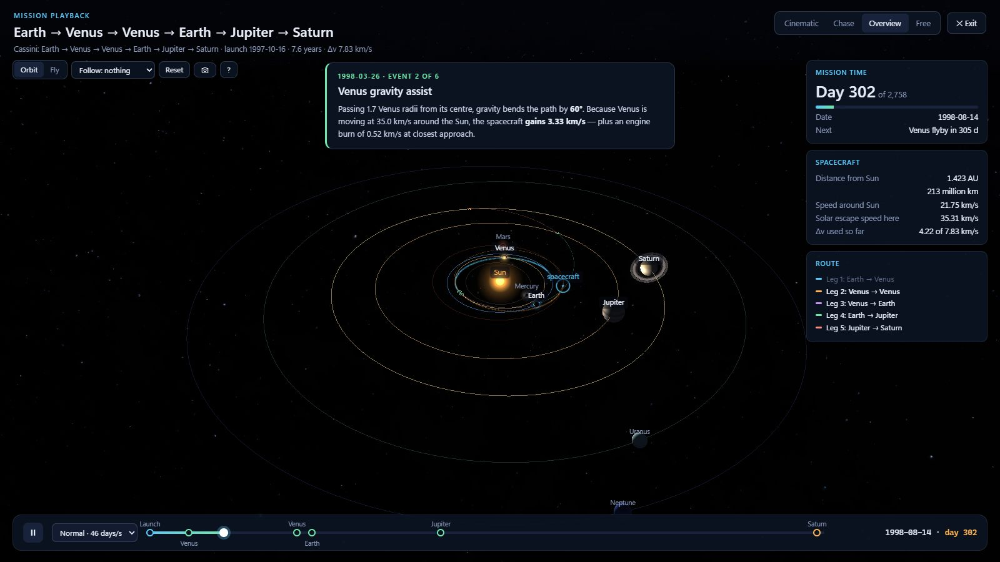
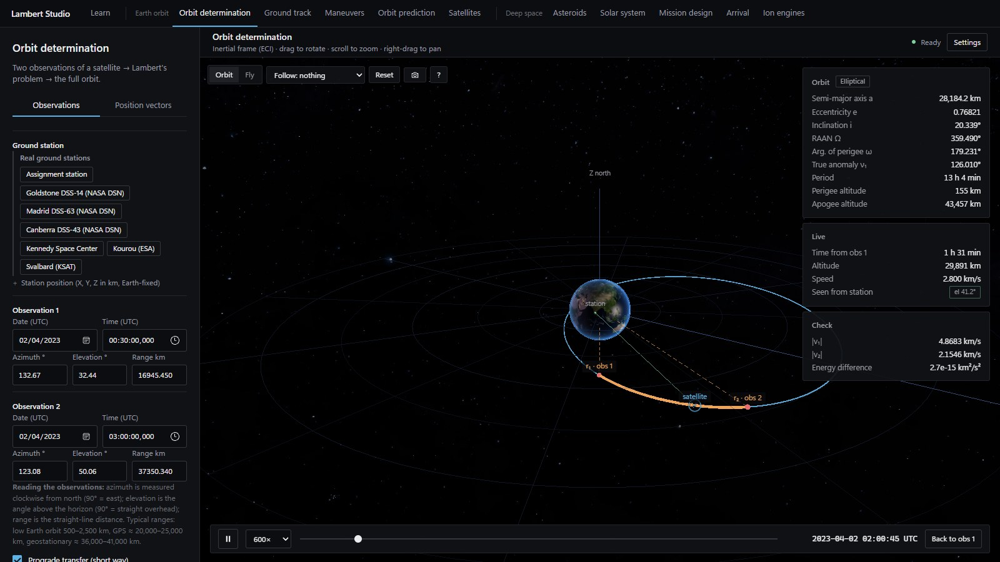
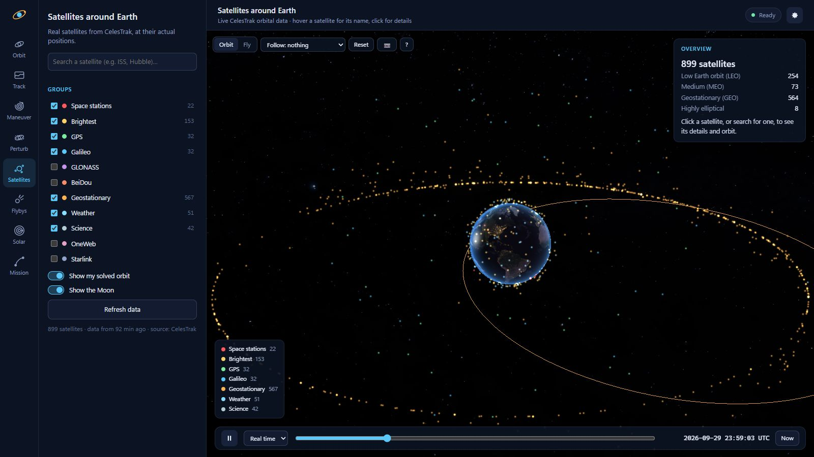
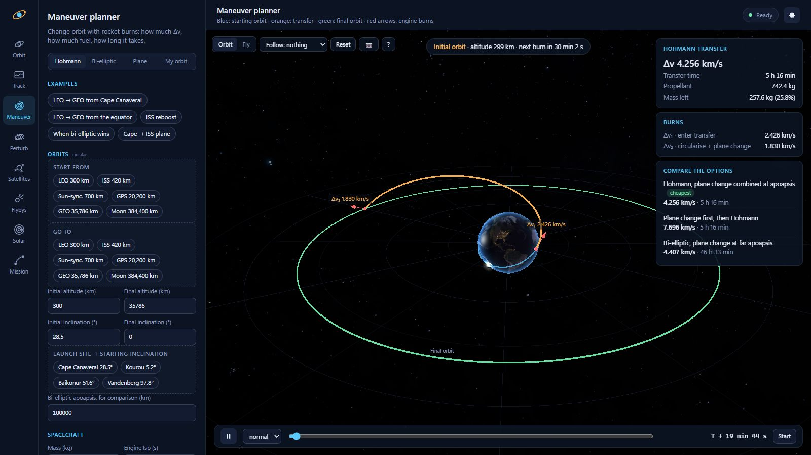
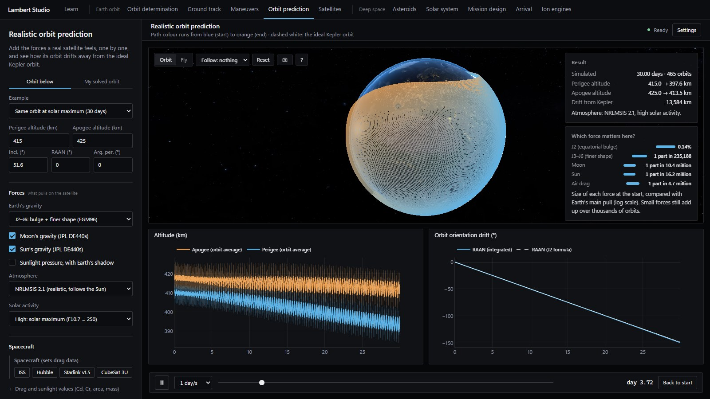
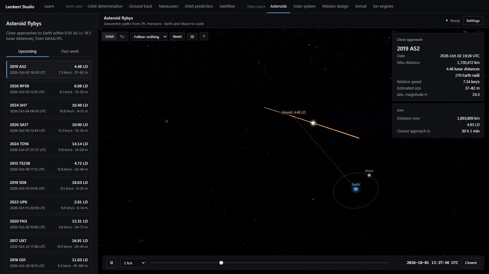
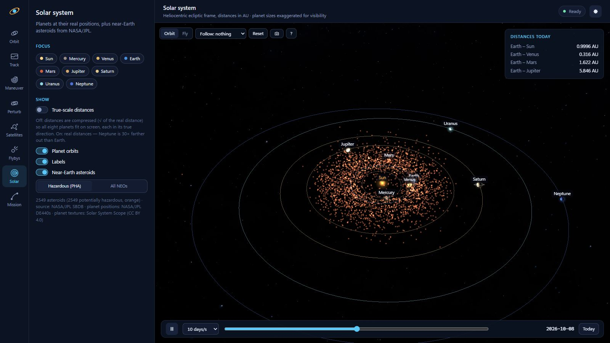
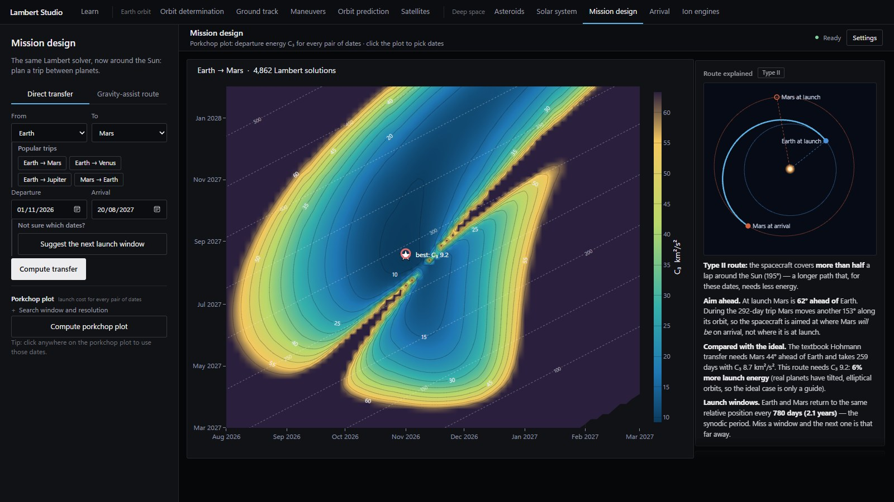
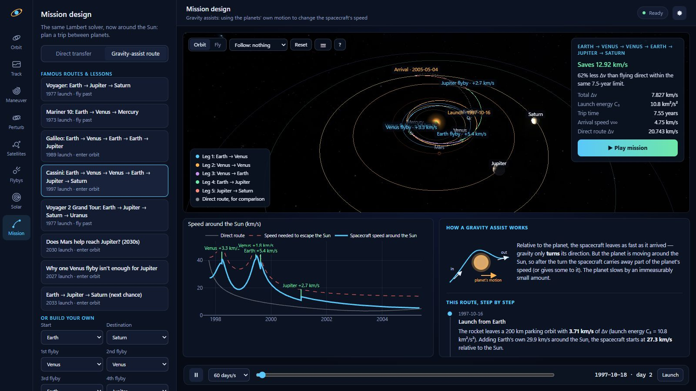
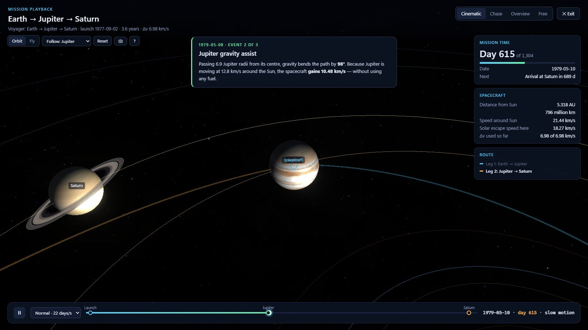

I turned a university assignment on orbit determination into an interactive mission-design studio that rediscovers the routes of Voyager, Cassini and Galileo from physics alone.

A ground station measures azimuth, elevation and range twice, 2.5 hours apart. Solving Lambert's problem (the maths behind every interplanetary mission) turns those six numbers into the complete orbit.

a = 28,184 km · e = 0.768 · i = 20.34° · period 13 h 04 min






Routes with up to four flybys, including repeat visits to the same planet (multi-revolution Lambert), optimised over thousands of launch dates and flight times, then explained step by step.

Cassini's launch period: flying direct to Saturn costs 20.7 km/s; the flyby route needs 7.8 km/s.

A full-screen, cinematic replay of any mission: the camera swings to each planet, time slows at every flyby, and live telemetry shows the spacecraft passing solar escape speed.
The optimiser is never told the real dates, only the planets and a launch period.
| Mariner 10 · Venus flyby | 6 Feb 1974 | 1.6 days off |
| Voyager · launch | 2 Sep 1977 | 2.2 days off |
| Galileo · Venus flyby | 21 Feb 1990 | 11 days off |
| Cassini · launch | 16 Oct 1997 | 1.4 days off |
| Cassini · Earth flyby | 17 Aug 1999 | 4 hours off |
| Hohmann LEO → GEO | 3.8926 km/s | textbook 3.893 |
103 automated validation checks · 27 pytest tests · browser-driven UI tests
Screenshots can look right and still be wrong; a wider search turned Cassini from worse-than-direct into the historical route; and knowing where the maths breaks (resonant orbits) matters as much as the maths.
Built with Claude Code as an AI pair-programming assistant, with every step directed, run and checked by me.